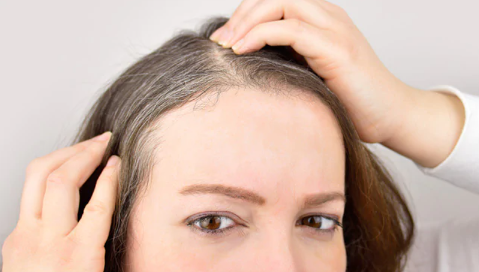
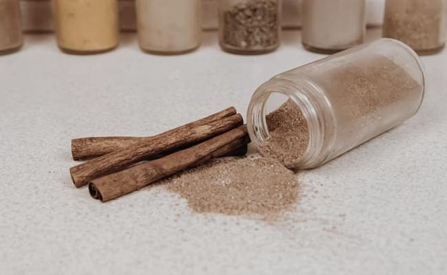
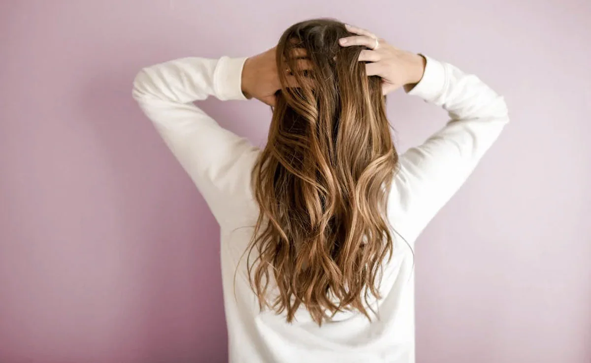

Prince
Say Goodbye To Hair Fall: Harness The Benefits Of Cinnamon For Healthy Hair
Are you suffering from excessive hair fall? Are those tangled hair strands on the comb giving you nightmares? If yes, then it's time to buckle up and pay attention to your hair health. We understand the sight of dull and rough hair may trigger a frantic search for home remedies, with people resorting to expensive hair oils and shampoos. But what we often fail to realise is that our diet has a crucial role to play. It is rightly said, we are what we eat and there are a variety of food ingredients to prevent hair fall and promote hair growth as well. The best part is, you do not need to go miles to get hold of those foods; instead, scan through your kitchen pantry and pick a jar of cinnamon. You heard us.
Why Cinnamon Is Considered A Healthy Spice?
Cinnamon, also called dalchini in Hindi, has been a part of our diet since time immemorial. It is aromatic, flavourful and adds a good dose of healthy nutrients to our diet. Cinnamon is packed with antioxidants, anti-inflammatory and anti-viral properties, potassium, magnesium and several essential vitamins and minerals that are known to help us detox, lose weight, manage diabetes and heart health among others.
How Cinnamon Helps Slow Hair Fall?
Hair fall ranging between 50 and 100 strands a day is considered normal, but when the number increases it becomes a matter of concern. That is where a dose of cinnamon may come to help. According to a study, published in the International Journal of Ayurveda and Alternative Medicine, a compound in cinnamon, named cinnamaldehyde, may help with blood circulation in hair follicles, reducing the risks of hair fall.
How Does Cinnamon Help Promote Hair Growth?
A study conducted by researchers at the University of California found that cinnamon contains a compound named procyanidin, which is linked to the growth of hair. Besides, it is also a potent source of antioxidants, which help you detox, promoting blood and oxygen flow in the body.
How Does Cinnamon Help Prevent Dandruff?
Cinnamon is packed with anti-bacterial and anti-fungal properties and according to several studies, these properties may work against Malassezia, a fungus that is known to cause dandruff in hair.
How To Include Cinnamon In Your Diet For Hair Health?
While there are various culinary usages of cinnamon, one of the best ways to include it in your healthy diet regime is in the form of detox tea. Cinnamon tea is easy to brew and can help you make the most of its benefits.
How To Make Cinnamon Tea For Hair Growth?
You can prepare this drink in two easy ways - one recipe includes cinnamon sticks and the other includes cinnamon powder.
Recipe 1. How To Make Cinnamon Tea With Cinnamon Sticks:
All you need to do is, soak half-inch cinnamon stick in a glass of water overnight and boil it the next morning. Strain, add some honey and lemon if you want and drink.
Recipe 2. How To Make Cinnamon Tea With Cinnamon Powder:
Take a glass of water in a saucepan and add half a teaspoon of cinnamon powder to it. On low to medium flame, boil it for around 10-15 minutes until the colour of the water changes. Switch off the flame, strain the water and drink. You can add some honey, lemon and black salt for taste.

How Much Cinnamon Tea A Person Should Drink In A Day?
Experts recommend drinking not more than one cup of cinnamon tea a day. However, the amount varies from person to person as per their tolerance. Hence, it is always better to consult a health expert before adopting any lifestyle change. And always remember, moderation is the key!
Disclaimer: This content including advice provides generic information only. It is in no way a substitute for qualified medical opinion. Always consult a specialist or your own doctor for more information. NDTV does not claim responsibility for this information.
Prince
follow us on :-